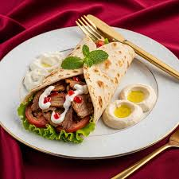

LEBANESE CHICKEN SHAWARMA is the best due to its meticulous preparation, a complex blend of aromatic spices, and signature accompaniments. The key lies in the marinade, a rich mixture of yogurt (which tenderizes the meat), lemon juice, olive oil, and a distinct mix of spices, including cardamom, cinnamon, nutmeg, cloves, cumin, and paprika, which creates a deep, layered flavor profile that avoids the simplicity of other regional variations. This is traditionally cooked on a vertical rotisserie, allowing the meat to slow-roast and baste in its own juices and rendered fat, resulting in tender, juicy chicken with deliciously crispy, caramelized edges. Once cooked, it is thinly sliced and typically wrapped in a soft pita with specific, balancing elements like sharp pickled vegetables (turnips, cucumbers) and a generous spread of the potent, creamy garlic sauce called toum, which is the soulmate of the dish and rarely substituted with mayonnaise or yogurt in authentic preparations. This combination of expertly spiced, slow-cooked meat, the tang of pickles, and the punch of garlic sauce creates a harmonious and unforgettable flavor explosion in every bite that distinguishes it as superior street fooD